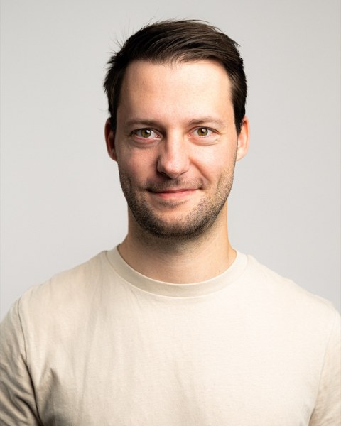

now · embodied agents
I work on embodied agents. At Flexion Robotics, I build and train agentic systems on top of large vision-language and world models, so robots can plan tasks, imagine how to carry them out, and notice when something goes wrong.
before · brains & machines
I started out where AI meets neuroscience. During my PhD with Wolfgang Maass at TU Graz, I studied how networks of neurons can learn without backpropagation through time, which led to e-prop (Nature Communications, 2020). I also trained a large-scale, data-based model of mouse visual cortex and helped analyse it (Science Advances, 2022). I then joined Huawei's Zurich Research Center, where I worked on brain-inspired, self-supervised and efficient learning (NeurIPS 2022) and later led the neuromorphic computing team.